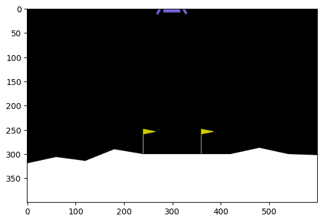

import gymnasium as gym
import numpy as np
import matplotlib.pyplot as plt
from matplotlib.animation import FuncAnimation
import torch [Essays] 강화학습
imports
Game1
- 문제설명: 두개의 버튼이 있다. 버튼1을 누르면 1의 보상을, 버튼2를 누르면 100의 보상을 준다고 가정
action = np.random.choice(['button1','button2'])
action'button1'if action == 'button1':
reward = 1
else:
reward = 100for _ in range(10):
action = np.random.choice(['button1','button2'])
if action == 'button1':
reward = 1
else:
reward = 100
print(action,reward)button2 100
button2 100
button2 100
button2 100
button2 100
button2 100
button2 100
button1 1
button1 1
button2 100- 게임을 푸는 방법? 버튼2를 누른다.
- 용어 정리 - Agent = 버튼을 누르는 사람 - Action = 에이전트가 할 수 있는 행동 (현재는 2개의 action이 가능) - Env = Agent의 action을 보고 reward를 주는 존재 - 게임의 종료 = 버튼을 누르면 게임이 종료 - 게임을 푸는 방법 = reward를 최대화하는 action을 선택
Game2
- 문제설명: 에이전트는 현재 2의 위치에 있다. 에이전트는 (1) 정지 (2) 왼쪽으로 이동 (3) 오른쪽으로 이동 하는 3개의 행동을 할 수 있다. 에이전트가 4의 위치에 도달하면 100의 보상을 얻고 게임이 종료된다. 에이전트가 0의 위치에 도달하면 보상없이 게임이 종료된다.
- 에이전트와 환경의 상호작용 구현1
state = 2action = np.random.choice([0,1,2])print(state,action)2 2for _ in range(9999):
if state == 2:
print(state)
reward = 200
print("2의 위치에 도달, 보상 {}점 획득".format(reward))
break
elif state == -2:
print(state)
reward = 0
print("-2의 위치에 도달, 보상 {}점 획득".format(reward))
break
else:
print(state,action)
state = state + action
action = np.random.choice(['<-','.','->'])
2
2의 위치에 도달, 보상 200점 획득- 에이전트와 환경의 상호작용 구현2
gym.spaces.Discrete(3)Discrete(3)gym.spaces.Discrete?Init signature: gym.spaces.Discrete( n: 'int | np.integer[Any]', seed: 'int | np.random.Generator | None' = None, start: 'int | np.integer[Any]' = 0, ) Docstring: A space consisting of finitely many elements. This class represents a finite subset of integers, more specifically a set of the form :math:`\{ a, a+1, \dots, a+n-1 \}`. Example: >>> from gymnasium.spaces import Discrete >>> observation_space = Discrete(2, seed=42) # {0, 1} >>> observation_space.sample() 0 >>> observation_space = Discrete(3, start=-1, seed=42) # {-1, 0, 1} >>> observation_space.sample() -1 Init docstring: Constructor of :class:`Discrete` space. This will construct the space :math:`\{\text{start}, ..., \text{start} + n - 1\}`. Args: n (int): The number of elements of this space. seed: Optionally, you can use this argument to seed the RNG that is used to sample from the ``Dict`` space. start (int): The smallest element of this space. File: ~/anaconda3/envs/torch/lib/python3.11/site-packages/gymnasium/spaces/discrete.py Type: type Subclasses:
class Game2(gym.Env):
def __init__(self):
self.action_space = gym.spaces.Discrete(3,start=-1) # Acition = {-1,0,1}
self.observation_space = gym.spaces.Discrete(5,start=-2) # State = {-2,-1,0,1,2}
self.state = 0
self.t = 0
def step(self,action):
self.state = self.state + action
self.t = self.t + 1
if self.state == 2:
reward = 100
else:
reward = -1
info = {}
if self.state == -2 or self.state==2:
done = True
else:
done = False
return self.state, reward, done, info
def render(self):
print('state: {}'.format(self.state))
def reset(self):
self.state = 0
return self.stateenv=Game2()Game3
Game4: LunarLander
환경만들기
- 환경을 만드는 방법은 아래와 같다.
env = gym.make('LunarLander-v2',render_mode='rgb_array')- 환경에 대한 기본 정보를 조사하여 보자.
env.observation_spaceBox([-1.5 -1.5 -5. -5. -3.1415927 -5.
-0. -0. ], [1.5 1.5 5. 5. 3.1415927 5. 1.
1. ], (8,), float32)env.action_spaceDiscrete(4)환경관찰
- 환경관찰
env.reset()(array([ 0.00517321, 1.3996556 , 0.5239665 , -0.5006593 , -0.00598759,
-0.11868618, 0. , 0. ], dtype=float32),
{})env.step(0) # state, reward, done, _ (array([ 0.01034651, 1.3878149 , 0.52325904, -0.5262889 , -0.01185256,
-0.11730985, 0. , 0. ], dtype=float32),
-1.1491504152058667,
False,
False,
{})- action
env.action_space.sample()0- int형으로 전달
- action -> nextstate, reward, done
env.step(env.action_space.sample())(array([ 0.01545191, 1.375376 , 0.51473296, -0.5528772 , -0.01599996,
-0.08295576, 0. , 0. ], dtype=float32),
-0.530722855526476,
False,
False,
{})frames = []
env.reset()
for _ in range(300):
frames.append(env.render())
env.step(env.action_space.sample())
env.close()fig, ax = plt.subplots()
ani = FuncAnimation(fig,lambda i: ax.imshow(frames[::100][i]),frames=len(frames[::100]))
ani<matplotlib.animation.FuncAnimation at 0x7f32e4732050>Replay Buffer
- 랜덤액션을 연속적으로 생성하고 그 결과를 기록해보자.
states = []
actions = []
rewards = []
next_states = []
dones = []_state1 = env.reset()
for t in range(1500):
_action = env.action_space.sample()
_state2, _reward, _done, _ = env.step(_action)
## save code
states.append(_state1.tolist())
actions.append(_action)
rewards.append(_reward)
next_states.append(_state2.tolist())
dones.append(_done)
## save code end
_state1 = _state2
if _done:
breakValueError: too many values to unpack (expected 4)- 모인 히스토리를 확인해보자.
len(states), len(actions), len(next_states), len(rewards), len(dones)(116, 116, 116, 116, 116)Qnetwork 설계
- 네트워크의 목적: 내가 여기서 뭘 해야하는지 알려줘! = 내가 이 상태에서, 어떠한 액션을 해야하는지 알려줘 \(\to\) 8개의 상태를 입력으로 받으면 4개의 액션에 대한 좋은 정도를 숫자로 표현하는 어떠한 함수를 만들자.
- net 설계
net = torch.nn.Sequential(
torch.nn.Linear(in_features=8, out_features=128),
torch.nn.ReLU(),
torch.nn.Linear(in_features=128, out_features=64),
torch.nn.ReLU(),
torch.nn.Linear(in_features=64, out_features=32),
torch.nn.ReLU(),
torch.nn.Linear(in_features=32, out_features=4)
)
netSequential(
(0): Linear(in_features=8, out_features=128, bias=True)
(1): ReLU()
(2): Linear(in_features=128, out_features=64, bias=True)
(3): ReLU()
(4): Linear(in_features=64, out_features=32, bias=True)
(5): ReLU()
(6): Linear(in_features=32, out_features=4, bias=True)
)net(torch.tensor(states))tensor([[ 0.1159, -0.1567, -0.1098, -0.1431],
[ 0.1156, -0.1568, -0.1101, -0.1433],
[ 0.1161, -0.1562, -0.1095, -0.1434],
[ 0.1152, -0.1559, -0.1102, -0.1450],
[ 0.1151, -0.1553, -0.1102, -0.1457],
[ 0.1141, -0.1548, -0.1108, -0.1468],
[ 0.1134, -0.1542, -0.1112, -0.1476],
[ 0.1133, -0.1537, -0.1111, -0.1480],
[ 0.1141, -0.1530, -0.1105, -0.1479],
[ 0.1140, -0.1525, -0.1104, -0.1483],
[ 0.1137, -0.1526, -0.1107, -0.1482],
[ 0.1143, -0.1520, -0.1102, -0.1482],
[ 0.1134, -0.1515, -0.1108, -0.1492],
[ 0.1134, -0.1510, -0.1108, -0.1497],
[ 0.1125, -0.1506, -0.1113, -0.1507],
[ 0.1118, -0.1501, -0.1118, -0.1515],
[ 0.1117, -0.1502, -0.1115, -0.1516],
[ 0.1117, -0.1495, -0.1114, -0.1520],
[ 0.1114, -0.1487, -0.1117, -0.1528],
[ 0.1115, -0.1480, -0.1116, -0.1531],
[ 0.1121, -0.1476, -0.1110, -0.1530],
[ 0.1117, -0.1468, -0.1115, -0.1537],
[ 0.1114, -0.1477, -0.1112, -0.1532],
[ 0.1111, -0.1469, -0.1117, -0.1539],
[ 0.1117, -0.1464, -0.1110, -0.1538],
[ 0.1117, -0.1459, -0.1110, -0.1540],
[ 0.1116, -0.1465, -0.1105, -0.1538],
[ 0.1115, -0.1466, -0.1104, -0.1537],
[ 0.1112, -0.1457, -0.1108, -0.1543],
[ 0.1112, -0.1451, -0.1105, -0.1545],
[ 0.1111, -0.1440, -0.1104, -0.1550],
[ 0.1112, -0.1432, -0.1100, -0.1551],
[ 0.1113, -0.1423, -0.1095, -0.1551],
[ 0.1115, -0.1409, -0.1091, -0.1559],
[ 0.1117, -0.1394, -0.1087, -0.1567],
[ 0.1117, -0.1384, -0.1079, -0.1566],
[ 0.1114, -0.1390, -0.1078, -0.1561],
[ 0.1115, -0.1376, -0.1070, -0.1567],
[ 0.1115, -0.1365, -0.1061, -0.1566],
[ 0.1116, -0.1357, -0.1052, -0.1561],
[ 0.1115, -0.1359, -0.1050, -0.1558],
[ 0.1115, -0.1348, -0.1042, -0.1559],
[ 0.1122, -0.1331, -0.1035, -0.1566],
[ 0.1117, -0.1328, -0.1027, -0.1562],
[ 0.1107, -0.1323, -0.1018, -0.1553],
[ 0.1106, -0.1332, -0.1018, -0.1549],
[ 0.1100, -0.1325, -0.1007, -0.1544],
[ 0.1106, -0.1310, -0.1002, -0.1549],
[ 0.1102, -0.1301, -0.0991, -0.1546],
[ 0.1102, -0.1299, -0.0987, -0.1545],
[ 0.1103, -0.1292, -0.0975, -0.1542],
[ 0.1110, -0.1281, -0.0974, -0.1550],
[ 0.1105, -0.1286, -0.0960, -0.1549],
[ 0.1112, -0.1276, -0.0959, -0.1558],
[ 0.1114, -0.1269, -0.0947, -0.1556],
[ 0.1118, -0.1261, -0.0940, -0.1560],
[ 0.1122, -0.1252, -0.0933, -0.1563],
[ 0.1126, -0.1244, -0.0926, -0.1567],
[ 0.1125, -0.1243, -0.0910, -0.1571],
[ 0.1122, -0.1251, -0.0904, -0.1571],
[ 0.1120, -0.1254, -0.0892, -0.1573],
[ 0.1122, -0.1246, -0.0881, -0.1573],
[ 0.1125, -0.1245, -0.0870, -0.1577],
[ 0.1130, -0.1237, -0.0871, -0.1588],
[ 0.1131, -0.1239, -0.0869, -0.1590],
[ 0.1133, -0.1236, -0.0863, -0.1599],
[ 0.1135, -0.1232, -0.0857, -0.1608],
[ 0.1138, -0.1229, -0.0850, -0.1618],
[ 0.1140, -0.1226, -0.0841, -0.1626],
[ 0.1139, -0.1232, -0.0834, -0.1631],
[ 0.1138, -0.1234, -0.0817, -0.1634],
[ 0.1146, -0.1225, -0.0817, -0.1645],
[ 0.1156, -0.1217, -0.0819, -0.1655],
[ 0.1155, -0.1217, -0.0798, -0.1668],
[ 0.1159, -0.1213, -0.0792, -0.1675],
[ 0.1165, -0.1209, -0.0798, -0.1681],
[ 0.1163, -0.1210, -0.0783, -0.1690],
[ 0.1166, -0.1208, -0.0777, -0.1695],
[ 0.1163, -0.1207, -0.0760, -0.1699],
[ 0.1162, -0.1206, -0.0745, -0.1704],
[ 0.1164, -0.1207, -0.0741, -0.1708],
[ 0.1164, -0.1204, -0.0727, -0.1713],
[ 0.1160, -0.1211, -0.0719, -0.1717],
[ 0.1158, -0.1211, -0.0706, -0.1720],
[ 0.1160, -0.1213, -0.0700, -0.1723],
[ 0.1166, -0.1211, -0.0706, -0.1727],
[ 0.1172, -0.1210, -0.0711, -0.1730],
[ 0.1171, -0.1216, -0.0696, -0.1732],
[ 0.1173, -0.1218, -0.0691, -0.1734],
[ 0.1175, -0.1220, -0.0686, -0.1734],
[ 0.1177, -0.1222, -0.0682, -0.1734],
[ 0.1176, -0.1224, -0.0669, -0.1731],
[ 0.1182, -0.1225, -0.0676, -0.1733],
[ 0.1187, -0.1225, -0.0679, -0.1734],
[ 0.1189, -0.1227, -0.0675, -0.1733],
[ 0.1193, -0.1227, -0.0672, -0.1733],
[ 0.1195, -0.1228, -0.0669, -0.1733],
[ 0.1195, -0.1230, -0.0666, -0.1733],
[ 0.1200, -0.1229, -0.0674, -0.1734],
[ 0.1197, -0.1228, -0.0667, -0.1739],
[ 0.1194, -0.1232, -0.0659, -0.1737],
[ 0.1190, -0.1236, -0.0649, -0.1739],
[ 0.1199, -0.1232, -0.0661, -0.1741],
[ 0.1205, -0.1230, -0.0663, -0.1743],
[ 0.1223, -0.1225, -0.0675, -0.1742],
[ 0.1227, -0.1224, -0.0676, -0.1740],
[ 0.1234, -0.1222, -0.0670, -0.1749],
[ 0.1242, -0.1221, -0.0671, -0.1747],
[ 0.1250, -0.1220, -0.0672, -0.1744],
[ 0.1250, -0.1225, -0.0665, -0.1742],
[ 0.1266, -0.1217, -0.0677, -0.1740],
[ 0.1282, -0.1211, -0.0676, -0.1748],
[ 0.1297, -0.1203, -0.0687, -0.1744],
[ 0.1407, -0.1144, -0.0539, -0.1827],
[ 0.1454, -0.1127, -0.0571, -0.1802],
[ 0.2541, -0.0678, -0.1365, -0.2192]], grad_fn=<AddmmBackward0>)Policy 설계
- 네트워크의 의미
states[0],states[1]([-0.0028694153297692537,
1.4209814071655273,
-0.2906474471092224,
0.44716283679008484,
0.0033316602930426598,
0.06583605706691742,
0.0,
0.0],
[-0.005824565887451172,
1.4311281442642212,
-0.29839688539505005,
0.4509572386741638,
0.006180517841130495,
0.05698297545313835,
0.0,
0.0])net(torch.tensor(states[0:2]))tensor([[ 0.1159, -0.1567, -0.1098, -0.1431],
[ 0.1156, -0.1568, -0.1101, -0.1433]], grad_fn=<AddmmBackward0>)- 상태0에서는 액션0이, 상태1에서도 액션0이 가장 좋다는 의미 (왜? q-value가 젤 높으니까..)
- 따라서 Agent는 아래와 같이 행동해야 한다. (네트워크가 잘 학습되었다는 전제가 필요함) - state[0] -> action = 0 - state[1] -> action = 0
net(torch.tensor(states[0:2])).max(axis=1)torch.return_types.max(
values=tensor([0.1159, 0.1156], grad_fn=<MaxBackward0>),
indices=tensor([0, 0]))net(torch.tensor(states[0:2])).max(axis=1)[1]tensor([0, 0])- 네트워크가 있으므로 이제 어떠한 state에 대해서도 뭘 해야할지 (=어떤 액션을 해야할지) 알 수 있다.
_state1 # 어떤 state에 대해서도.. array([-0.04434567, -0.00875275, 0.42108542, 0.08506536, -1.7435462 ,
-0.67104954, 1. , 0. ], dtype=float32)net(torch.tensor(_state1)) # q-value를 계산할 수 있고 tensor([ 0.1422, -0.1106, -0.0881, -0.1557], grad_fn=<AddBackward0>)int(torch.argmax(net(torch.tensor(_state1)))) # 그래서 다음에 우리가 어떤행동을 해야할 지 알 수 있음0학습
- 네트워크를 학습시키자.
net.to("cuda:0")Sequential(
(0): Linear(in_features=8, out_features=128, bias=True)
(1): ReLU()
(2): Linear(in_features=128, out_features=64, bias=True)
(3): ReLU()
(4): Linear(in_features=64, out_features=32, bias=True)
(5): ReLU()
(6): Linear(in_features=32, out_features=4, bias=True)
)scores=[]
playtimes=[]
eps = 1
opt = torch.optim.Adam(net.parameters(),lr=0.0001)for epsd in range(1,2001): # 게임 2000판 시켜줌..
state1 = env.reset() # 환경리셋 + 초기화된 환경을 state라는 변수에 저장
score = 0
for t in range(1000): # 게임1판당 max 1000프레임만 할 수 있음
# (step1) Agent: action
if np.random.rand() < eps:
action = env.action_space.sample() # 랜덤액션을 뽑음
else:
action = int(torch.argmax(net(torch.tensor(state1).to("cuda:0")))) # 네트워크가 알려주는 action을 뽑음
# (step2) Agent -> Env // Env -> Agent
state2, reward, done, _ = env.step(action) # 액션을 환경에 전달 -> (next_state, reward, done) 을 받음
# (step3) Agnet: save data and learn
## save data
states.append(state1.tolist())
actions.append(action)
rewards.append(reward)
next_states.append(state2.tolist())
dones.append(done)
## 최근 5000개의 자료만 준비함.
if len(states)>5000:
_states = torch.tensor(states[-5000:])
_actions = torch.tensor(actions[-5000:]).reshape(-1,1)
_next_states = torch.tensor(next_states[-5000:])
_rewards = torch.tensor(rewards[-5000:]).reshape(-1,1)
_dones = torch.tensor(dones[-5000:]).to(torch.float).reshape(-1,1)
else:
_states = torch.tensor(states)
_actions = torch.tensor(actions).reshape(-1,1)
_next_states = torch.tensor(next_states)
_rewards = torch.tensor(rewards).reshape(-1,1)
_dones = torch.tensor(dones).to(torch.float).reshape(-1,1)
## 최근 5000개의 자료에서 128개를 임의로 추출함.
_n = len(_states)
_index = np.random.choice(_n,128) # 128 is batch_size
_states = _states[_index]
_actions = _actions[_index]
_next_states = _next_states[_index]
_rewards = _rewards[_index]
_dones = _dones[_index]
## GPU로 이동
_states = _states.to("cuda:0")
_actions = _actions.to("cuda:0")
_next_states = _next_states.to("cuda:0")
_rewards = _rewards.to("cuda:0")
_dones = _dones.to("cuda:0")
## leanrn with pytorch
yhat = net(_states).gather(1,_actions) ## (s,a) -> q(s,a) // 내가 현재상태 state에서, 현재 action을 하여 얻을 것이라 예상하는 보상 (net가 알려주는)
y = _rewards + 0.99 * net(_next_states).detach().max(1)[0].reshape(-1,1)*(1-_dones) ## 그런데 실제로는 이게 맞다고 봐야지~
loss = torch.mean((y-yhat)**2)
loss.backward()
opt.step()
opt.zero_grad()
# (step4) Agent: prepare next steps
state1 = state2
eps = max(0.05, 0.99*eps)
score += reward
# terminate
if done:
scores.append(score)
playtimes.append(t)
break
print('\rEpisode {}\tScore: {:.2f}\tPlaytime: {:.2f}'.format(epsd, scores[-1],playtimes[-1]), end="")
if epsd % 100 == 0:
print('\rEpisode {}\tScore: {:.2f}\tPlaytime: {:.2f}'.format(epsd, np.mean(scores[-100:]),np.mean(playtimes[-100])))Episode 94 Score: -117.16 Playtime: 999.00